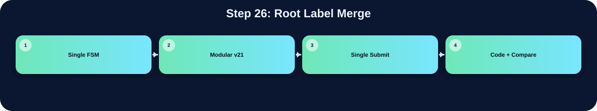

將非 root label 的 bbox 合併回 root label。

此表把本流程在三個版本中的 state/module 與 code 關係整理出來；沒有明確對應者保持空白。
| 版本 | 對應 state / module | 和 code 的關係 |
|---|---|---|
| Single FSM | S_BBOX_INIT | CCL 完成後，把被 union 的 label 的 bbox 合併回 root label |
| Modular v21 | ||
| Single Submit |
在「Root Label Merge」流程中，並非三個版本都有獨立而明確的程式段落。Single FSM 版有明確對應，主要在 S_BBOX_INIT 完成，說明為：CCL 完成後，把被 union 的 label 的 bbox 合併回 root label。Modular v21 版沒有明確獨立此流程，可能由子模組內部合併處理，或該架構不採用此額外階段。Single Submit 版沒有明確獨立此流程，對應原始碼區塊依需求保持空白。這種差異通常來自架構選擇：單一 FSM 會把多個小步驟合併在同一段 state；模組化版本則傾向把功能交給特定子模組；single_submit 則在單檔中保留 module-level 階段。
下方採用下拉式區塊顯示。中文說明放在程式碼上方；原始程式碼本身沒有修改、沒有插入註解。若某份檔案沒有明確對應流程，該程式碼區塊保持空白。
S_BBOX_INIT: begin
if (label_idx<next_label) begin
root_label = find_root_func(label_idx);
if ((root_label!=label_idx)&&bbox_valid[label_idx]) begin
bbox_valid[root_label]<=1'b1;
if (bbox_xmin[label_idx]<bbox_xmin[root_label]) bbox_xmin[root_label]<=bbox_xmin[label_idx];
if (bbox_xmax[label_idx]>bbox_xmax[root_label]) bbox_xmax[root_label]<=bbox_xmax[label_idx];
if (bbox_ymin[label_idx]<bbox_ymin[root_label]) bbox_ymin[root_label]<=bbox_ymin[label_idx];
if (bbox_ymax[label_idx]>bbox_ymax[root_label]) bbox_ymax[root_label]<=bbox_ymax[label_idx];
if (bbox_border[label_idx]) bbox_border[root_label]<=1'b1;
bbox_valid[label_idx]<=1'b0;
end
label_idx<=label_idx+9'd1;
end else begin
addr_cnt<=16'd0; req_cnt<=17'd0; label_idx<=9'd1;
edge_stage<=2'd0; edge_ctr<=8'd0;
state<=S_BOXMAP_GEN;
end
end